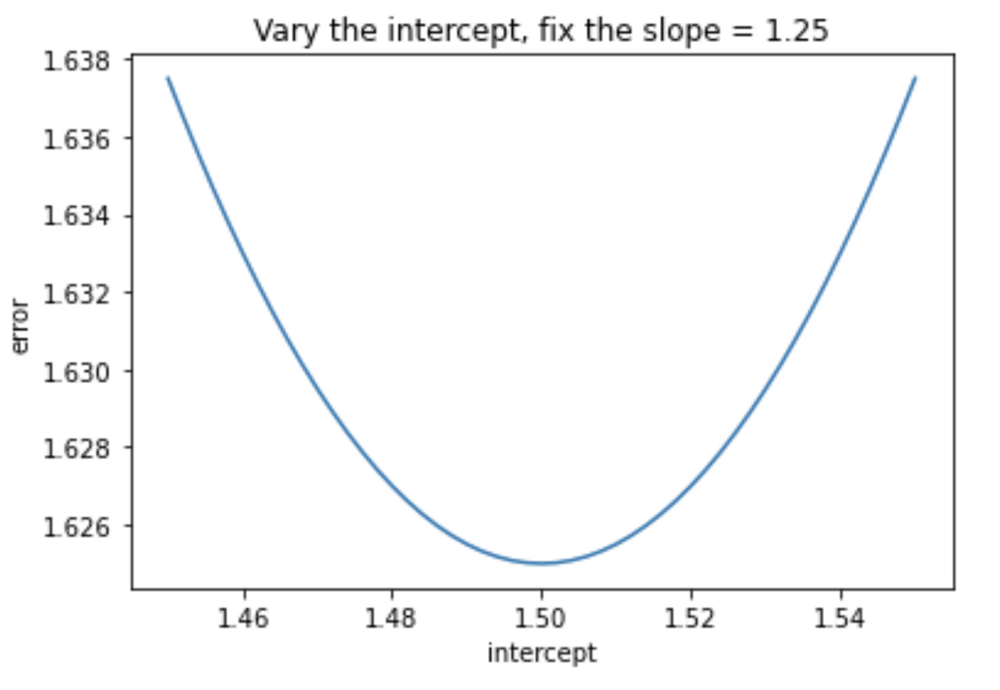
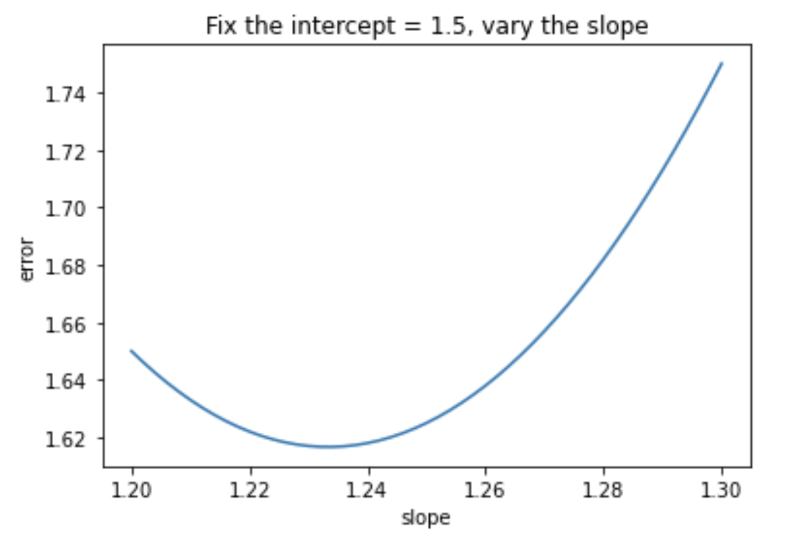
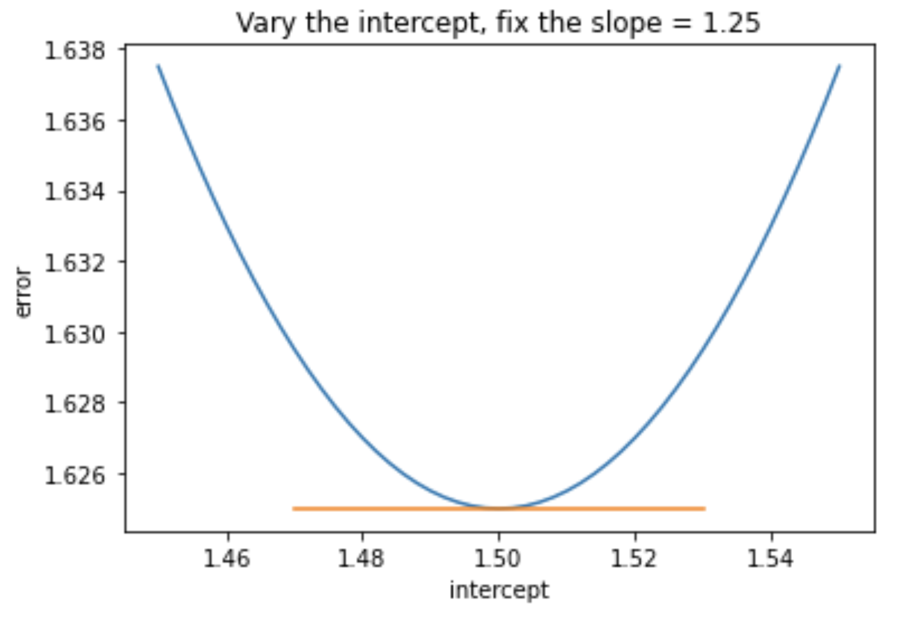
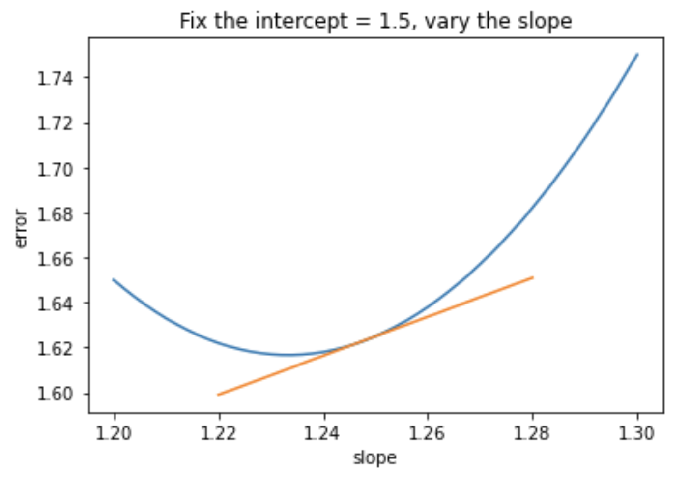
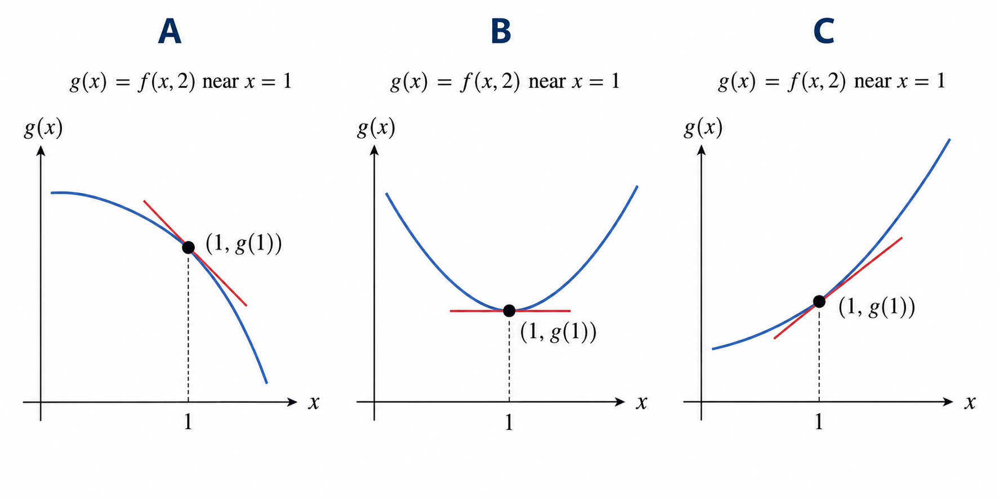
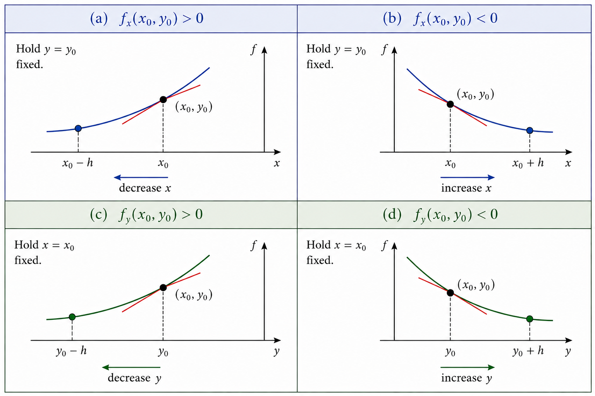
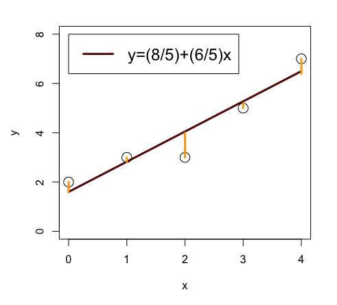
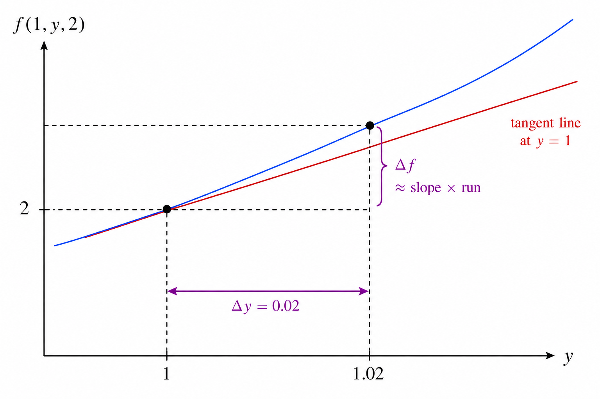

Partial Derivatives
What is a Partial Derivative?
Consider again the problem of finding the least squares line for the set of points: \[ (0,2), \qquad (1,3), \qquad (2,3), \qquad (3,5), \qquad (4,7) \]
The line \(y = 3/2 + (5/4) x\) has a sum of squared errors:
\[\operatorname{SSE}(3/2,5/4) = \displaystyle\sum_{i=1}^5 (3/2 + (5/4) x_i - y_i)^2 = 1.625\]
The sum of squared errors is obtained by squaring the length of each of the orange vertical segments shown below and adding the results.

One way to minimize the SSE is to consider one parameter at a time.
We first consider how the error varies when we change \(\beta_1\) (the \(y\)-intercept) from \(\beta_1 = 1.5\) while holding \(\beta_2\) (the slope) fixed at \(\beta_2 = 1.25\).

We can see from Figure 2 that both increasing and decreasing \(\beta_1\) increase the SSE. This graph does not imply that we are at a minimum since we still may be able to decrease the SSE by changing \(\beta_2\) instead.
We next consider how the error varies when we change \(\beta_2\) (the slope) from \(\beta_2 = 1.25\) while holding \(\beta_1\) (the \(y\)-intercept) fixed at \(\beta_1 = 1.5\).

We can see from Figure 3 that decreasing the slope from \(\beta_2 = 1.25\) while holding \(\beta_1\) fixed will decrease the SSE.
In fact, we could use one-variable calculus to determine exactly how much to decrease the slope to minimize the SSE while holding the \(y\)-intercept fixed at \(\beta_1 = 1.5\). Repeating this one-variable minimization process while alternating between parameters is called coordinate descent.
In this note, we will learn about partial derivatives and use them to minimize the two-variable function \(\operatorname{SSE}(\beta_1, \beta_2)\) directly.
A partial derivative of a multivariable function is the rate of change with respect to a single input variable while holding the remaining variables fixed.
Definition: Partial Derivatives of \(f(x,y)\)
The partial derivative of \(f(x,y)\) with respect to \(x\) at the point \((x_0,y_0)\) is \[\frac{\partial f}{\partial x} (x_0,y_0) = \left.\frac{d}{dx}f(x,y_0)\right\vert_{x=x_0}\]
The partial derivative of \(f(x,y)\) with respect to \(y\) at the point \((x_0,y_0)\) is \[\frac{\partial f}{\partial y} (x_0,y_0) = \left.\frac{d}{dy}f(x_0,y)\right\vert_{y=y_0}\]
Consider again how the SSE varies when we change \(\beta_1\) (the \(y\)-intercept) from \(\beta_1 = 1.5\) while holding \(\beta_2\) (the slope) fixed at \(\beta_2 = 1.25\).

From Figure 4 we see that the partial derivative of the SSE with respect to \(\beta_1\) when \(\beta_1 = 1.5\) and \(\beta_2 = 1.25\) is zero. Geometrically, this partial derivative is the slope of the orange tangent line. We denote this partial derivative mathematically as:
\[\displaystyle\frac{\partial \operatorname{SSE}}{\partial \beta_1} (1.5,1.25) = 0\]
Consider again how the error varies when we change \(\beta_2\) (the slope) from \(\beta_2 = 1.25\) while holding \(\beta_1\) (the \(y\)-intercept) fixed at \(\beta_1 = 1.5\).

From Figure 5 we see that the partial derivative of the SSE with respect to \(\beta_2\) when \(\beta_1 = 1.5\) and \(\beta_2 = 1.25\) is positive. Geometrically, this partial derivative is the slope of the orange tangent line. We denote this partial derivative mathematically as:
\[\displaystyle\frac{\partial \operatorname{SSE}}{\partial \beta_2} (1.5,1.25) > 0\]
The fact that this partial derivative is positive means that we can decrease the SSE by decreasing the slope slightly while holding the \(y\)-intercept fixed.
For \(f(x,y)\), we frequently use the more compact partial derivative notation \[f_x = \frac{\partial f}{\partial x}, \qquad f_y = \frac{\partial f}{\partial y}\]
The next exercise reviews what partial derivatives tell us about what the graph of a multivariable function looks like when all but one of the variables is fixed.
Consider a two-variable function \(f(x,y)\) and let \(g(x) = f(x,2)\). Suppose that \(g(x)\) near \(x = 1\) has one of the three possible graphs sketched below.

Match each partial derivative fact below with the appropriate graph.
\[f_x(1,2) = 0, \qquad f_x(1,2) > 0, \qquad f_x(1,2) < 0\]
Recall that \(f_x(1,2)\) is the slope of the line tangent to the graph of \(g(x) = f(x,2)\) at \(x = 1\).
- \(f_x(1,2) = 0\) corresponds to B
- \(f_x(1,2) > 0\) corresponds to C
- \(f_x(1,2) < 0\) corresponds to A
We now have enough tools to understand a version of the first derivative test for two-variable functions. This result gives us a necessary condition for a global minimum.
Proposition: First Derivative Test for a Global Minimum
Suppose \(f(x,y)\) has a global minimum at the point \((x_0,y_0)\). Then we must have \[f_x(x_0,y_0) = 0, \qquad f_y(x_0,y_0) = 0\]
We justify the first derivative test for a global minimum using the figure below.

Suppose \(f_x(x_0,y_0) \neq 0\) or \(f_y(x_0,y_0) \neq 0\). There are four cases to consider.
- If \(f_x(x_0,y_0) > 0\), then as part (a) of Figure 7 shows, we can decrease \(f\) by decreasing \(x\).
- If \(f_x(x_0,y_0) < 0\), then as part (b) of Figure 7 shows, we can decrease \(f\) by increasing \(x\).
- If \(f_y(x_0,y_0) > 0\), then as part (c) of Figure 7 shows, we can decrease \(f\) by decreasing \(y\).
- If \(f_y(x_0,y_0) < 0\), then as part (d) of Figure 7 shows, we can decrease \(f\) by increasing \(y\).
Therefore, if either partial derivative is not zero, we can find a point where \(f\) is smaller than \(f(x_0,y_0)\) and thus \(f\) cannot have a global minimum at \((x_0,y_0)\).
A function \(f\) has a global maximum at a point if the value of \(f\) at that point is greater than or equal to the value of \(f\) at every other point.
Draw sketches like those in Figure 7 to show that if \(f(x,y)\) has a global maximum at the point \((x_0,y_0)\), then we must have \[f_x(x_0,y_0) = 0, \qquad f_y(x_0,y_0) = 0\]
Calculating Partial Derivatives
In order to use the first derivative test to search for a global minimum of SSE, we need to calculate partial derivatives.
In this section we will learn how to calculate partial derivatives using standard derivative techniques such as the chain rule, product rule, and quotient rule.
Consider the function \[f(x,y) = x^2 + 3xy + y - 1\] To calculate \(f_x = \frac{\partial f}{\partial x}\) we differentiate with respect to \(x\) pretending that \(y\) is constant.
\[ \begin{align*} \frac{\partial f}{\partial x} &= \frac{\partial}{\partial x} (x^2 + 3xy + y - 1) \\ &= \frac{\partial}{\partial x} x^2 + \frac{\partial}{\partial x} 3xy + \frac{\partial}{\partial x} y + \frac{\partial}{\partial x} (-1) \\ &= 2x + 3y + 0 + 0 \\ &= 2x + 3y \end{align*} \]
To calculate \(f_y = \frac{\partial f}{\partial y}\) we differentiate with respect to \(y\) pretending that \(x\) is constant.
\[ \begin{align*} \frac{\partial f}{\partial y} &= \frac{\partial}{\partial y} (x^2 + 3xy + y - 1) \\ &= \frac{\partial}{\partial y} x^2 + \frac{\partial}{\partial y} 3xy + \frac{\partial}{\partial y} y + \frac{\partial}{\partial y} (-1) \\ &= 0 + 3x + 1 + 0 \\ &= 3x + 1 \end{align*} \]
Let
\[ f(x,y)=3x^2y+5xy^2 \]
Calculate the partial derivatives \(f_x\) and \(f_y\).
We will next learn how to use the chain rule, product rule, and quotient rule to calculate more complex partial derivatives.
Proposition: Chain Rule for Partial Derivatives
Recall the chain rule which says that if \[f(x) = g(h(x))\] then \[f'(x) = g'(h(x))h'(x)\]
The chain rule for partial derivatives says that if \[f(x,y) = g(h(x,y))\] then \[f_x(x,y) = g'(h(x,y)) h_x(x,y), \qquad f_y(x,y) = g'(h(x,y)) h_y(x,y)\]
Let’s use the chain rule to calculate the partial derivatives of \(f(x,y) = (2x-3y)^2\).
First note that \[f_x = \frac{\partial}{\partial x} (2x-3y)^2 = 2(2x-3y) \frac{\partial}{\partial x} (2x-3y) = 2(2x-3y)(2) = 8x-12y\]
Next we have that \[f_y = \frac{\partial}{\partial y} (2x-3y)^2 = 2(2x-3y) \frac{\partial}{\partial y} (2x-3y) = 2(2x-3y)(-3) = -12x+18y\]
Let
\[ f(x,y)=e^{\sin(xy^2)} \]
Calculate the partial derivatives \(f_x\) and \(f_y\).
Proposition: Product Rule for Partial Derivatives
Recall the product rule which says that \[\frac{d}{dx} \left (f(x) g(x) \right ) = f' g + f g'\]
The product rule for partial derivatives says that \[\frac{\partial}{\partial x} \left ( f(x,y) g(x,y) \right ) = f_x g + f g_x, \qquad \frac{\partial}{\partial y} \left ( f(x,y) g(x,y) \right ) = f_y g + f g_y\]
Let’s use the product rule as needed to calculate the partial derivatives of \(f(x,y) = e^{-x} \sin (x^2+2y)\).
To calculate \(f_x\) we need to use the product rule since \(f(x,y)\) is the product of two functions \(e^{-x}\) and \(\sin(x^2+2y)\) each of which depend on \(x\).
\[ \begin{align*} f_x &= \left ( \frac{\partial}{\partial x} e^{-x} \right ) \sin(x^2+2y) + e^{-x} \left ( \frac{\partial}{\partial x}\sin(x^2+2y) \right ) \\ &= - e^{-x} \sin(x^2+2y) + e^{-x} \cos(x^2+2y) (2x) \end{align*} \]
To calculate \(f_y\), the product rule is not necessary because the first function \(e^{-x}\) does not depend on \(y\).
\[f_y = e^{-x} \frac{\partial}{\partial y} \sin(x^2+2y) = e^{-x} \cos(x^2+2y)(2)\]
Let
\[ f(x,y)=e^{2y}\cos(x^2+2y) \]
Calculate the partial derivatives \(f_x\) and \(f_y\).
Proposition: Quotient Rule for Partial Derivatives
Recall the quotient rule which says that \[\frac{d}{dx} \left ( \frac{f(x)} {g(x)} \right ) = \frac{f' g - f g'}{g^2}\] The quotient rule for partial derivatives says that \[\frac{\partial}{\partial x} \left ( \frac {f(x,y)} {g(x,y)} \right ) = \frac{f_x g - f g_x}{g^2}, \qquad \frac{\partial}{\partial y} \left ( \frac {f(x,y)} {g(x,y)} \right ) = \frac{f_y g - f g_y}{g^2}\]
Let’s use the quotient rule as needed to calculate the partial derivatives of \(f(x,y) = \displaystyle\frac{x}{x^2 + y^2}\).
To calculate \(f_x\) we need to use the quotient rule since \(f(x,y)\) is the quotient of two functions \(x\) and \(x^2+y^2\) each of which depend on \(x\).
\[ \begin{align*} f_x &= \frac{\left ( \frac{\partial}{\partial x} x \right ) (x^2+y^2) - x \left ( \frac{\partial}{\partial x} (x^2+y^2) \right )}{(x^2+y^2)^2} \\ &= \frac{ (x^2+y^2) - x (2x)}{(x^2+y^2)^2} \\ &= \frac{y^2 - x^2}{(x^2+y^2)^2} \end{align*} \]
To calculate \(f_y\), the quotient rule is not necessary because the numerator \(x\) does not depend on \(y\).
\[f_y = x \frac{\partial}{\partial y} (x^2+y^2)^{-1} = -x(x^2+y^2)^{-2} (2y) = \frac{-2xy}{(x^2+y^2)^2}\]
Let
\[ f(x,y)=\frac{3+y^2}{x^2-2y} \]
Calculate the partial derivatives \(f_x\) and \(f_y\).
Definition: Partial Derivatives of \(f(x,y,z)\)
For \(f(x,y,z)\) we define the partial derivatives \[\frac{\partial f}{\partial x} (x_0,y_0,z_0) = \left.\frac{d}{dx}f(x,y_0,z_0)\right\vert_{x=x_0}, \qquad \frac{\partial f}{\partial y} (x_0,y_0,z_0) = \left.\frac{d}{dy}f(x_0,y,z_0)\right\vert_{y=y_0}\] \[\frac{\partial f}{\partial z} (x_0,y_0,z_0) = \left.\frac{d}{dz}f(x_0,y_0,z)\right\vert_{z=z_0}\]
For \(f(x,y,z)\), we frequently use the more compact notation \[f_x = \frac{\partial f}{\partial x}, \qquad f_y = \frac{\partial f}{\partial y}, \qquad f_z = \frac{\partial f}{\partial z}\]
Consider the function
\[f(x,y,z) = 3e^{xy}\cos(yz)\]
To calculate \(f_x\), we differentiate with respect to \(x\) pretending that \(y\) and \(z\) are constant.
\[ \begin{aligned} f_x &= 3 \cos(yz)\left(\frac{\partial}{\partial x}e^{xy}\right)\\ &= 3 \cos(yz) ye^{xy} \end{aligned} \]
To calculate \(f_y\), we differentiate with respect to \(y\) pretending that \(x\) and \(z\) are constant. Since both \(e^{xy}\) and \(\cos(yz)\) depend on \(y\), we use the product rule.
\[ \begin{aligned} f_y &= 3\left(\frac{\partial}{\partial y}e^{xy}\right)\cos(yz) +3e^{xy}\left(\frac{\partial}{\partial y}\cos(yz)\right)\\ &=3xe^{xy}\cos(yz)-3ze^{xy}\sin(yz) \end{aligned} \]
To calculate \(f_z\), we differentiate with respect to \(z\) pretending that \(x\) and \(y\) are constant.
\[ \begin{aligned} f_z &=3e^{xy}\left(\frac{\partial}{\partial z}\cos(yz)\right)\\ &=-3ye^{xy}\sin(yz) \end{aligned} \]
Let
\[ f(x,y,z)=xy^2\sin(2yz^2) \]
Calculate the partial derivatives \(f_x\), \(f_y\), and \(f_z\).
Finding Least Squares Lines
Now that we know how to calculate partial derivatives, we return to the problem of finding a least squares line for the set of points:
\[ (0,2), \qquad (1,3), \qquad (2,3), \qquad (3,5), \qquad (4,7) \]
A line \(y = \hat{\beta}_1 + \hat{\beta}_2 x\) is a least squares line if and only if the SSE function given by
\[\operatorname{SSE}(\beta_1, \beta_2) = \displaystyle\sum_{i=1}^5 (\beta_1 + \beta_2 x_i - y_i)^2\]
has a global minimum at the point \((\hat{\beta}_1, \hat{\beta}_2)\).
We know that if SSE has a global minimum at \((\hat{\beta}_1, \hat{\beta}_2)\), then we must have
\[\displaystyle\frac{\partial \operatorname{SSE}}{\partial \beta_1}(\hat{\beta}_1,\hat{\beta}_2) = 0, \qquad \displaystyle\frac{\partial \operatorname{SSE}}{\partial \beta_2}(\hat{\beta}_1,\hat{\beta}_2) = 0\]
by the first derivative test.
For an arbitrary two-variable function, a point at which the partial derivatives are all zero does not necessarily correspond to a global minimum.
For example, consider the function \(f(x,y) = x^2 - y^2\) with partial derivatives \[f_x = 2x, \qquad f_y = -2y\] We certainly have \(f_x(0,0) = f_y(0,0) = 0\) but \(f\) does not have a global minimum at the point \((0,0)\) since \(f(0,0) = 0\) and \(f(0,1) = -1\).
However, in the special case of the sum of squared errors function for fitting a line to data where each \(x_i\) is distinct, the necessary condition for a global minimum is also sufficient. We will justify this fact in a later note.
Proposition: Least Squares Lines
Consider the \(n \geq 2\) data points \[ (x_1, y_1), \qquad (x_2, y_2), \qquad \cdots \qquad (x_n, y_n) \] where each \(x_i\) is distinct, and define the sum of squared errors function \[ \operatorname{SSE}(\beta_1, \beta_2) = \displaystyle\sum_{i=1}^n (\beta_1 + \beta_2 x_i - y_i)^2 \]
The line \(y = \hat{\beta}_1 + \hat{\beta}_2 x\) is a least squares line if and only if
\[\displaystyle\frac{\partial \operatorname{SSE}}{\partial \beta_1}(\hat{\beta}_1,\hat{\beta}_2) = 0, \qquad \displaystyle\frac{\partial \operatorname{SSE}}{\partial \beta_2}(\hat{\beta}_1,\hat{\beta}_2) = 0\]
We now apply the proposition above to find the least squares line for our original data set.
For the points
\[ (0,2), \qquad (1,3), \qquad (2,3), \qquad (3,5), \qquad (4,7) \]
the sum of squared errors function is
\[ \begin{aligned} \operatorname{SSE}(\beta_1,\beta_2) ={}&(\beta_1-2)^2+(\beta_1+\beta_2-3)^2\\ &+(\beta_1+2\beta_2-3)^2 +(\beta_1+3\beta_2-5)^2\\ &+(\beta_1+4\beta_2-7)^2 \end{aligned} \]
We first calculate the partial derivative with respect to \(\beta_1\):
\[ \begin{aligned} \frac{\partial \operatorname{SSE}}{\partial\beta_1} ={}&2(\beta_1-2) +2(\beta_1+\beta_2-3) +2(\beta_1+2\beta_2-3)\\ &+2(\beta_1+3\beta_2-5) +2(\beta_1+4\beta_2-7)\\ ={}&10\beta_1+20\beta_2-40 \end{aligned} \]
The partial derivative with respect to \(\beta_2\) is
\[ \begin{aligned} \frac{\partial \operatorname{SSE}}{\partial\beta_2} ={}&2(\beta_1+\beta_2-3) +4(\beta_1+2\beta_2-3)\\ &+6(\beta_1+3\beta_2-5) +8(\beta_1+4\beta_2-7)\\ ={}&20\beta_1+60\beta_2-104 \end{aligned} \]
By the proposition above, the least squares line is obtained by setting both partial derivatives equal to zero. Thus, we solve
\[ 10\beta_1+20\beta_2-40=0, \qquad 20\beta_1+60\beta_2-104=0 \]
Equivalently,
\[ \begin{aligned} \beta_1+2\beta_2&=4\\ 2\beta_1+6\beta_2&=10.4 \end{aligned} \]
Plugging \(\beta_1 = 4 - 2 \beta_2\) into the second equation gives \(8 + 2 \beta_2 = 10.4\) and thus \(\beta_2 = 1.2\).
Therefore, the unique solution to the linear system is \[\beta_1 = 1.6, \qquad \beta_2 = 1.2\] and the unique least squares line is:
\[y = 1.6 + 1.2x\]

Finally, we calculate the minimum sum of squared errors:
\[ \begin{aligned} \operatorname{SSE}(1.6,1.2) ={}&(1.6-2)^2+(1.6+1.2-3)^2\\ &+(1.6+2(1.2)-3)^2 +(1.6+3(1.2)-5)^2\\ &+(1.6+4(1.2)-7)^2\\ ={}&1.6. \end{aligned} \]
Thus, the SSE has a global minimum of \(1.6\), slightly smaller than the SSE of \(1.625\) for the line \(y=1.5+1.25x\) considered at the beginning of this note.
Consider fitting a line \(y=\beta_1+\beta_2 x\) to the five data points
\[ (0,1),\qquad (1,3),\qquad (2,4),\qquad (3,6),\qquad (4,8) \]
Write \(\operatorname{SSE}(\beta_1,\beta_2)\) explicitly as a sum of five squared terms.
Calculate and simplify the partial derivatives \(\displaystyle\frac{\partial\operatorname{SSE}}{\partial\beta_1}\) and \(\displaystyle\frac{\partial\operatorname{SSE}}{\partial\beta_2}\).
Set both partial derivatives equal to zero and solve the resulting system of two equations for \(\beta_1\) and \(\beta_2\).
Use your solution to write down the least squares line.
Is this least squares line unique? Explain how you know.
Calculate the minimum value of the SSE.
Linear Approximation
Let \(f(x,y,z) = \sqrt{x^2 + xy + xy^2 z}\) and suppose we want to estimate \(f(1,1.02,2)\) using a linear approximation. First we note that \(f(1,1,2) = \sqrt{4} = 2\). This suggests estimating \[\Delta f = f(1,1.02,2) - f(1,1,2)\]

Figure 9 illustrates the linear approximation: \[\Delta f \approx \text{slope} \times \text{run}\]
Since the slope of the tangent line is \(f_y(1,1,2)\) and the run is \(0.02\), we have \[\Delta f \approx f_y(1,1,2)(0.02)\]
We calculate \[f_y = (1/2)(x^2 + xy + xy^2z)^{-1/2}(x + 2xyz), \qquad f_y(1,1,2) = 5/4\]
Thus, \(\Delta f \approx (5/4)(0.02) = 1/40 = 0.025\) and \[f(1,1.02,2) \approx f(1,1,2) + 0.025 = 2.025\]
Using a calculator, we compute the exact value for comparison:
\[ \begin{aligned} f(1,1.02,2) &= \sqrt{1+1.02+2(1.02)^2}\\ &= \sqrt{4.1008}\\ &\approx 2.02504 \end{aligned} \]
Thus, our linear approximation of \(2.025\) is very close to the exact value of approximately \(2.02504\).
Let
\[ f(x,y,z)=e^{x^2+xy-3xz} \]
Use a linear approximation to estimate
\[ f(2,1,1.01) \]
Be sure to calculate the appropriate partial derivative and show how you use
\[ \Delta f \approx \text{slope}\times\text{run} \]
Use a calculator to find the exact value of \(f(2,1,1.01)\) and compare it to your estimate.
Second Derivatives
We can calculate second derivatives of a two-variable function by taking partial derivatives of its partial derivatives.
Definition: Second-Order Partial Derivatives
The second-order partial derivatives of \(f(x,y)\) are
\[ f_{xx} = \frac{\partial}{\partial x}\left(\frac{\partial f}{\partial x}\right), \qquad f_{yy} = \frac{\partial}{\partial y}\left(\frac{\partial f}{\partial y}\right) \]
and
\[ f_{xy} = \frac{\partial}{\partial y}\left(\frac{\partial f}{\partial x}\right), \qquad f_{yx} = \frac{\partial}{\partial x}\left(\frac{\partial f}{\partial y}\right). \]
The derivatives \(f_{xy}\) and \(f_{yx}\) are called mixed partial derivatives.
Consider the function
\[f(x,y) = x \cos y + y e^x\]
The first partial derivatives are
\[f_x = \cos y + ye^x, \qquad f_y = -x\sin y + e^x\]
Differentiating \(f_x\) with respect to \(x\) and \(y\) gives
\[ f_{xx} = ye^x, \qquad f_{xy} = -\sin y + e^x \]
Differentiating \(f_y\) with respect to \(x\) and \(y\) gives
\[ f_{yx} = -\sin y + e^x, \qquad f_{yy} = -x\cos y \]
Notice that the two mixed partial derivatives are equal. The following theorem shows that this is not a coincidence.
Theorem: Equality of Mixed Partial Derivatives
Suppose the second-order partial derivatives of \(f(x,y)\) are continuous near the point \((x_0,y_0)\). Then
\[ f_{xy}(x_0,y_0) = f_{yx}(x_0,y_0) \]
Let
\[ f(x,y) = x^2 \sin y + 2e^{xy} \]
Calculate all second-order partial derivatives.
Verify that
\[ f_{xy} = f_{yx} \]